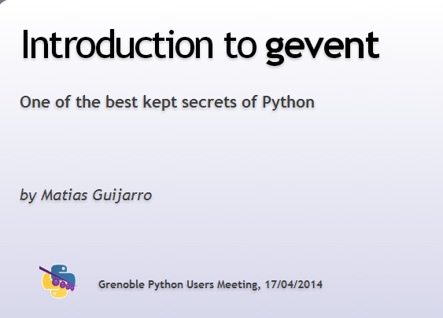

-
2014-04-17 a la Casemate
Matias Guijarro : "Introduction to gevent" Meetup
Voici les slides de Matias:

et le code source du demo
-
2014-03-27 a la Casemate
Mike Bright: "Lightweight Virtualization with Docker" Meetup
Voici les slides de Mike:

-
2014-02-27 a la Casemate
Sylvain Bauza "Python et Openstack : presentation de certaines librairies et frameworks" Meetup
Voici les slides de Sylvain:

La solution de IaaS Openstack est 100% Python.
De nombreux outils et librairies sont utilises qui ne lui sont pas specifiques.
C'est l'occasion d'changer autour de ces frameworks.- Stevedore (extensions)
- Flask
- Pecan/WSME
- Cliff (CLI)
- Alembic (migration SQLalchemy)
- Testtools/Testr (TestsU)
- Oslo
2014-01-23 a la Casemate

le 23 Janvier a eu lieu la premiere reunion du groupe, a la Casemate
Bien acceuilli par le LOG (Grenoble Hackerspace ) nous etions 17
a discuter, grignoter, manger et boire jusqu'a 23h.

Les presentations
Mike Bright Intro / Tendences Dev en 2014 |
|
Arthur Vuillard: Tester en Python |

|